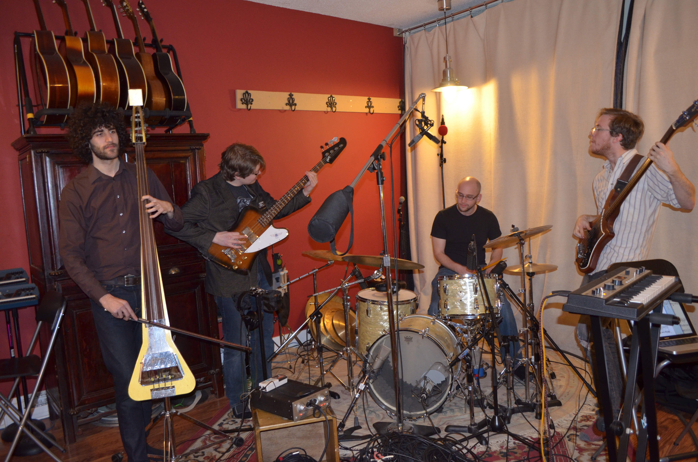
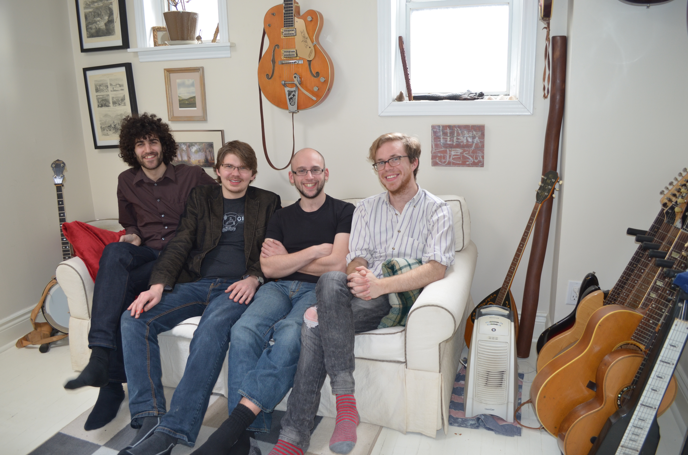

FORMALISTS

Article by Eunice Kim
Photos by Erin Bender Kerbel
Uploaded on March 27, 2014
There is nothing conventional or trite about classical-folk-indie-rock quartet called Formalists.
To start off, their name is an homage to Dmitri Shostakovich, a Soviet-era composer and pianist who was denounced twice for musical formalism. And like Shostakovich, the music that Formalists create is driven by structure, classical compositions and scrupulous attention to detail.
If that’s not interesting enough for you, all of the members—Joseph Landau (vocals and nylon-string guitar), Will Hunter (electric guitar, keyboard and banjo), Daniel Korn (drums) and Sean Traczyk (bass)—are classically-trained musicians who have extensive knowledge in a variety of musical techniques, cultures and genres, ranging from Irish folk music to twentieth century classical music.
The band is based in Thornhill, with the exception of Tracyzk, who is from Markham. The four met while majoring in music at York University. Landau and Hunter already knew each other from high school, having started the band together with a different lineup in 2010. Traczyk was Landau’s roommate at York; although at first he rejected Landau’s request to join the band as a bassist, he eventually gave in. It was ultimately Korn’s involvement in the band that completed the current lineup in early 2012.
“He was like, ‘Hey, do you wanna be in my band,’ and I was like ‘Yeah.’ Then he sent me a Facebook message and was like, ‘We’re going to have practice and as long as you like it, we’re just going to assume you’re in the band,” Ryerson Media Production graduate student Korn chuckles, recalling his first meeting with Landau.
Formalists’ double EP Congratulations to Those Who Move Onwards and Excel!/In Support of Healthy Structure was released in February 2013, featuring eight carefully crafted songs that take the listener on a unique auditory journey. Each song is rich with piquant lyrics and challenges the mind with its seamlessly orchestrated melodies. When it’s all over, the listener is left in a certain kind of awe, if not with a fair amount of appreciation for Landau’s impressive vocal range, their innovative sound and overall technical mastery.
|
|
Formalists’ double EP Congratulations to Those Who Move Onwards and Excel!/In Support of Healthy Structure was released in February 2013, featuring eight carefully crafted songs that take the listener on a unique auditory journey. Each song is rich with piquant lyrics and challenges the mind with its seamlessly orchestrated melodies. When it’s all over, the listener is left in a certain kind of awe, if not with a fair amount of appreciation for Landau’s impressive vocal range, their innovative sound and overall technical mastery.
Their music, to put it simply, is warm and sweet as apple pie. By taking a classical approach to composing their complex songs, they manage to strike the perfect balance between folk and alternative rock.
When it comes to their lyrics, Landau says they are all autobiographical and are often inspired by everyday conversations. He teaches English as a second language and sometimes his students will say curious things that are “born out of them not having a firm grasp of the language.”
“It’ll be these like really poetic statements that I know they didn’t intend, but it’ll still sound really great and I’ll just remember those,” he smiles.
Although Formalists can only hold weekly 90-minute rehearsals, they take the utmost advantage of the limited time they have by planning the exact bars they will practise for that week.
The band’s creative process is entirely democratic; Landau will typically come to practice with prewritten material, including rough drum and guitar parts. Korn will usually rework the drum portion while Hunter plays around with guitar effects and ambient sounds in general.
“I don’t think any of us are married to our parts,” Korn says. He explains that when they do have artistic clashes, they are just differences of opinion, and considering their academic backgrounds, they can all justify why they think something should be a certain way.
Formalists are currently in the studio recording their new album called 6 Possible Illusions Prior to Death. They are experimenting with a different style of music that will prove to be potentially more challenging for the listener than their previous works.
Hunter says the reason for the evolution was partially motivated by the fact that they wanted a “certain cohesiveness to the last album and the material prepared at the time.”
The music from the last EP no longer represents how they sound and 6 Possible Illusions Prior to Death will be a drastic departure from what Formalists have done in the past.
Landau offers an insightful analogy: “When you’re first getting into music and you hear something that you don’t understand, it’s like almost revolting and you’re almost angry that anyone could like that piece of music.”
“But then, in a few years, you totally change your mind and the music that you once loved loses the edge and you only maybe like it from the memories that it gave you at the time.”

back to spotlight